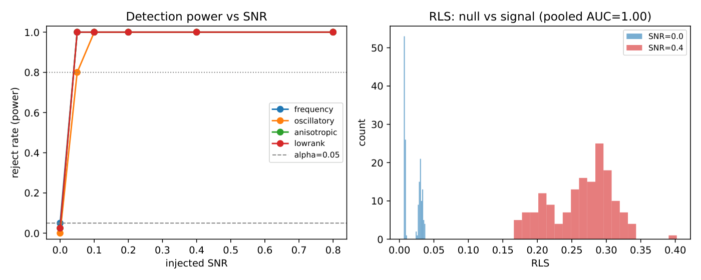
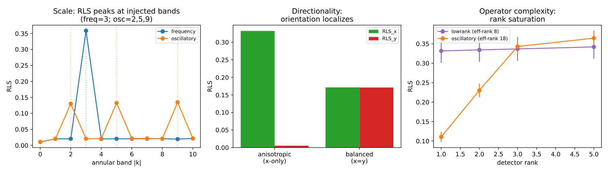
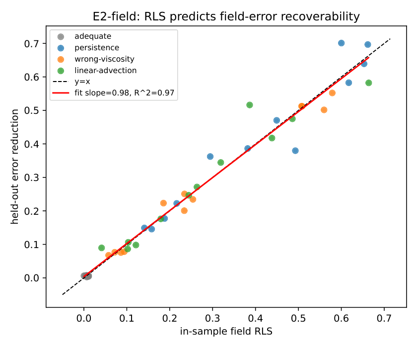
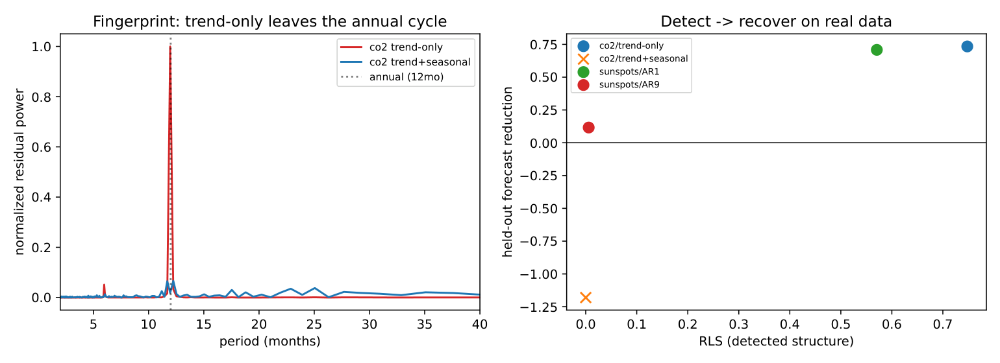
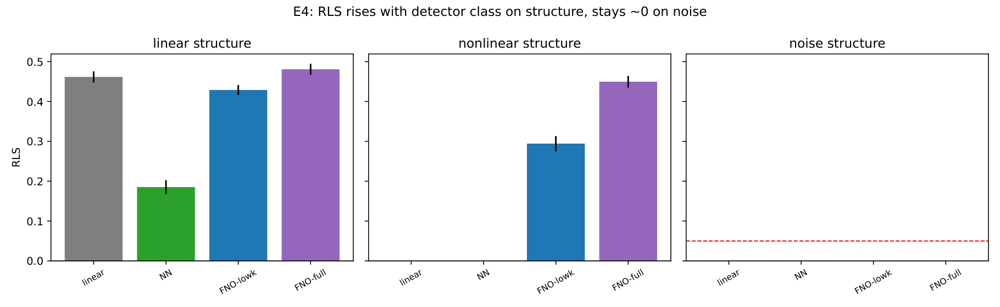

A calibrated, interpretable test for a question a loss value can't answer: has a model captured all the learnable signal — or is it still leaving structure on the table?
Validation loss tells you how wrong a model is, not whether it is as right as it can be. Two models with identical held-out error can be in completely different situations — one has extracted all the learnable signal and leaves only irreducible noise; the other is systematically missing a periodicity, an interaction, or a region of input space. An adequate model leaves residuals that behave like white noise; a deficient one leaves residuals that are still predictable.
RLS makes that concrete: it measures the fraction of the residual field's variance a detector can recover out-of-sample — a detector-relative quantity that ties the score directly to the theory of usable (V-)information. It produces three coupled outputs:
A significant score certifies a model is improvable; a null result certifies nothing — it may mean the model is adequate, or that the detector was too weak. Reporting the detector alongside the score is non-negotiable, and cross-fitting makes memorized noise score zero.
Across six pre-registered studies: near-perfect noise/signal separation (ROC-AUC 0.998) at the nominal false-positive rate; the in-sample score predicting held-out error reduction almost one-to-one (R² 0.97–0.99, including PDE residual fields with the FNO detector); exact recovery of injected scale / orientation / complexity; and a detector sweep confirming every class — up to a full FNO — reads zero on pure noise.
It flagged a deliberately weak linear regressor — its fingerprint pointing at the geographic and nonlinear features a linear model structurally cannot express, with a large share of held-out error recovered — while clearing a strong gradient-boosting model as having no detectable structure left. On real time series it named the exact seasonal period a misspecified forecaster had ignored.





The central move is to treat the residuals not as a bag of numbers but as a field over the problem's domain. "Structure" is then any departure from white noise, and it can be viewed four equivalent ways — as predictability, as low rank, as a best-fitting template, or as spectral concentration — each a different practical handle on the same object.
The detector of choice is a Fourier Neural Operator, chosen less for raw power than for legibility: because it fits through learnable weights in the frequency domain, the fit doubles as a readable fingerprint of what was missed. Calibration comes from the permutation machinery, not the raw number — which is what lets the procedure use an arbitrarily powerful detector without losing its error control.
RLS is, at its core, a probing method with the honesty machinery interpretability has been missing. The field's central worry about probes — that a probe "finding" a feature may be reading its own capacity rather than the model's computation — is exactly what the permutation null, out-of-sample estimation, and recoverability check are built to neutralize. The same procedure transfers directly to language models: applied to an LLM's next-token residuals or its residual-stream activations, it asks whether a candidate direction carries real, causally-recoverable signal or is an artifact — a natural bridge to the mechanistic interpretability of large language models.